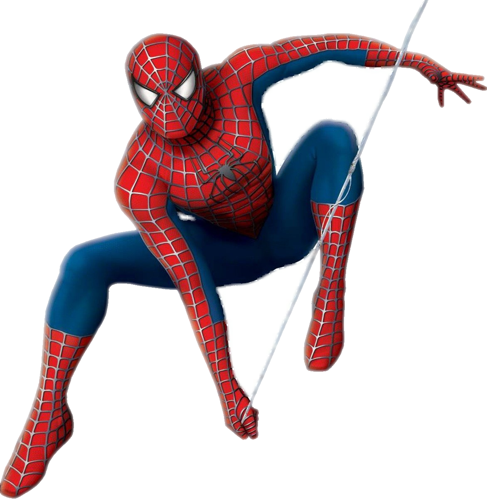

Челове́к-пау́к (англ. Spider-Man), настоящее имя Пи́тер Бе́нджамин Па́ркер
(англ. Peter Benjamin Parker) — супергерой, появляющийся в комиксах издательства
Marvel Comics, созданный Стэном Ли и Стивом Дитко. С момента своего первого
появления на страницах комикса Amazing Fantasy № 15 (рус. Удивительная фантазия
, август 1962) он стал одним из самых популярных супергероев. Ли и Дитко задумывали
персонажа как подростка-сироту, воспитанного дядей и тётей, совмещающего жизнь
обычного студента и борца с преступностью. Человек-паук получил суперсилу, увеличенную
ловкость, «паучье чутьё», а также способность держаться на отвесных поверхностях
и выпускать паутину из рук с использованием прибора собственного изобретения.
До появления Человека-паука в 1960-х подростки в комиксах о супергероях обычно
были всего лишь их помощниками. Комиксы о Человеке-пауке разбили эти стереотипы
, представив героем одинокого подростка, отвергаемого многими сверстниками[4]
, у которого не было опытного наставника, как Стив Роджерс у Баки или Бэтмен
у Робина. После смерти своего дяди Бена ему пришлось самостоятельно узнавать,
что «с большой силой приходит и большая ответственность» (англ. With great
power there must also come great responsibility).